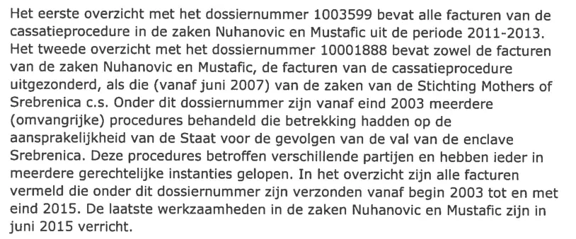
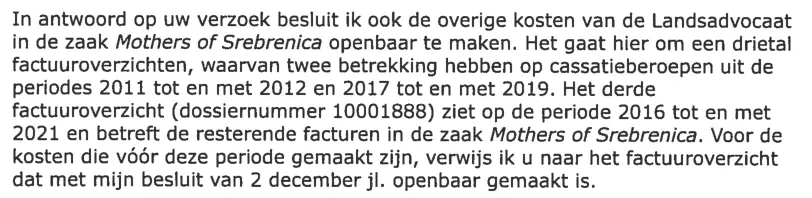

Preuve · Lettre
Ministère de la Défense, décisions Wob sur les frais de l’avocat de l’État, 2 décembre 2021 et 5 janvier 2022
Extrait de la décision du 2 décembre 2021
« Le deuxième relevé, portant le numéro de dossier 10001888, contient à la fois les factures des affaires Nuhanovic et Mustafic, à l’exception des factures de la procédure en cassation, et celles (à partir de juin 2007) des affaires de la fondation Mothers of Srebrenica et consorts. Sous ce numéro de dossier ont été traitées, depuis la fin de 2003, plusieurs procédures (de grande ampleur) portant sur la responsabilité de l’État pour les conséquences de la chute de l’enclave de Srebrenica. » Page 1, troisième paragraphe. Les lignes sont ici réunies. Traduit du néerlandais ; le texte original figure ci-dessous.
“Het tweede overzicht met het dossiernummer 10001888 bevat zowel de facturen van de zaken Nuhanovic en Mustafic, de facturen van de cassatieprocedure uitgezonderd, als die (vanaf juni 2007) van de zaken van de Stichting Mothers of Srebrenica c.s. Onder dit dossiernummer zijn vanaf eind 2003 meerdere (omvangrijke) procedures behandeld die betrekking hadden op de aansprakelijkheid van de Staat voor de gevolgen van de val van de enclave Srebrenica.” Texte original

Extrait de la décision du 5 janvier 2022
« En réponse à votre demande, je décide de rendre publics également les autres frais de l’avocat de l’État dans l’affaire Mothers of Srebrenica. Il s’agit de trois relevés de factures, dont deux concernent des pourvois en cassation pour les périodes 2011 à 2012 inclus et 2017 à 2019 inclus. Le troisième relevé de factures (numéro de dossier 10001888) porte sur la période 2016 à 2021 inclus et concerne les factures restantes dans l’affaire Mothers of Srebrenica. » Page 9 du PDF, troisième paragraphe. Les lignes sont ici réunies. Traduit du néerlandais ; le texte original figure ci-dessous.
“In antwoord op uw verzoek besluit ik ook de overige kosten van de Landsadvocaat in de zaak Mothers of Srebrenica openbaar te maken. Het gaat hier om een drietal factuuroverzichten, waarvan twee betrekking hebben op cassatieberoepen uit de periodes 2011 tot en met 2012 en 2017 tot en met 2019. Het derde factuuroverzicht (dossiernummer 10001888) ziet op de periode 2016 tot en met 2021 en betreft de resterende facturen in de zaak Mothers of Srebrenica.” Texte original

Pourquoi ce document compte
Le 2 décembre 2021 et le 5 janvier 2022, le ministère de la Défense a rendu publics, à la demande de Giltay, cinq relevés de factures de l’avocat de l’État, relatifs aux affaires Nuhanović et Mustafić et à celles de la fondation Mothers of Srebrenica. Les totaux, TVA comprise, s’élèvent à 289 555,13 € (cassation Nuhanović et Mustafić, 2011–2013), 1 839 041,87 € (le dossier principal, 2003–2015), 39 415,27 € et 131 390,65 € (cassation dans l’affaire des Mères, 2011–2012 et 2017–2019) et 327 218,35 € (le dossier principal, 2016–2021). Soit au total 2 626 621,27 €. Cette addition ne figure pas dans les décisions ; l’essai la résume par plus de 2,6 millions d’euros entre 2003 et 2021. Balkan Insight en a rendu compte le 21 janvier 2022.
Provenance
- Document
- Deux décisions sur des demandes fondées sur la Wet openbaarheid van bestuur (Wob), ancienne loi néerlandaise sur la publicité de l’administration, avec cinq relevés de factures en annexe
- Expéditeur
- Ministère de la Défense, administration centrale (Bestuursstaf), direction de la Communication, La Haye
- Destinataire
- E. Giltay (2 décembre 2021) et E.F. Giltay (5 janvier 2022)
- Date
- 2 décembre 2021, apposée au tampon, et 5 janvier 2022, inscrite à la main
- Référence
- BS2021025638 et BS2021028374
- Objet
- « Besluit op uw Wob-verzoek » (Décision sur votre demande Wob)
- Références
- Demandes Wob de Giltay du 8 octobre et du 8 décembre 2021
- Signé
- Pour le ministre de la Défense, la secrétaire générale, G.E.A. van Craaikamp
- Annexes
- Cinq relevés de factures de l’avocat de l’État
- Langue
- Néerlandais
- Pages
- 12
- Caviardé
- Les signatures ainsi que les noms et coordonnées des personnes à contacter
- Source
- dedoofpotgeneraal.
nl/ doc/ landsadvocaat.pdf - Voir aussi
- Balkan Insight sur les 2,6 millions d’euros dépensés par l’État néerlandais, 21 janvier 2022
Cité dans : l’essai « L’interdiction tombée, le livre debout » dans le chapitre (12) « Plus aucune autre option ».
Fiche de preuve : https://
Document : https://
Dernière modification le 10 octobre 2026, consulté le 10 octobre 2026.

Cette page est une fiche de preuve du livre Le Général de dissimulation d’Edwin Giltay et du site web qui l’accompagne.